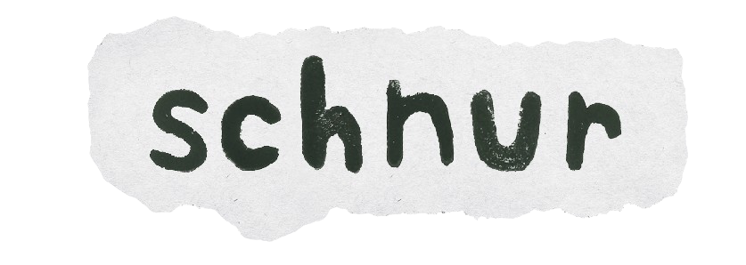
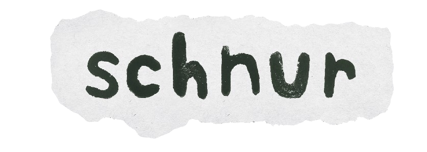

Hey! I’m Liv, a senior at Boston University, majoring in Advertising and minoring in business administration. I have hands-on experience with A&R scouting, talent strategy, and artist development.
I have developed and branded an internationally nominated radio program called “The Basement”. It’s focused on spotlighting emerging talent through live sessions and interviews. I have also interviewed nationally touring bands.
I am very passionate about crafting an artist’s brand and place a lot of weight on the importance of an authentic promotion. I love film, art, and obviously music, and one of the things that tie all mediums together is storytelling. I am looking to utilize all of the skills I have learned or taught myself to build up artists.